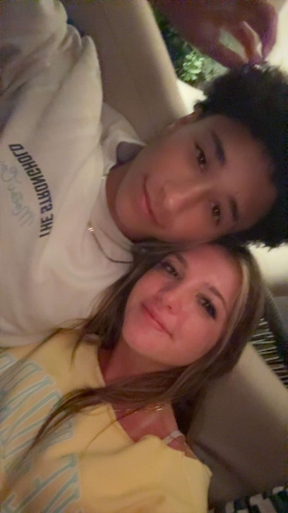
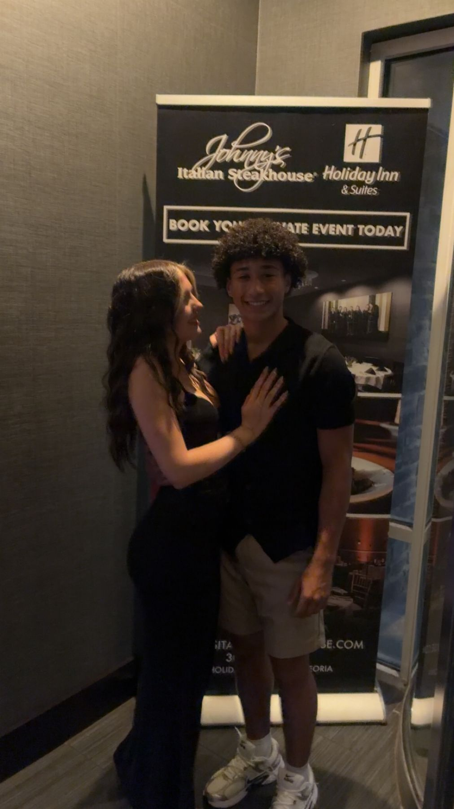
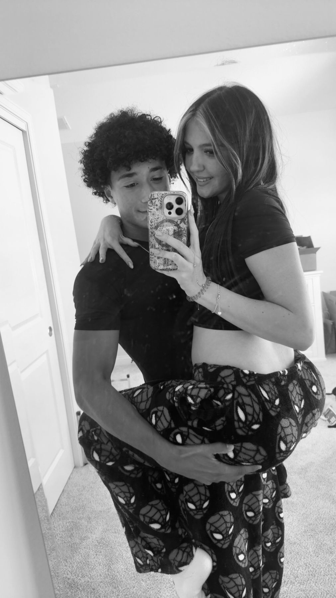
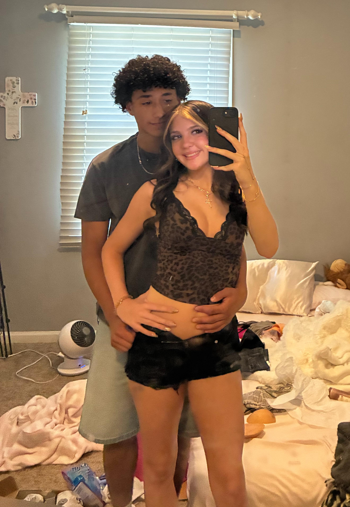
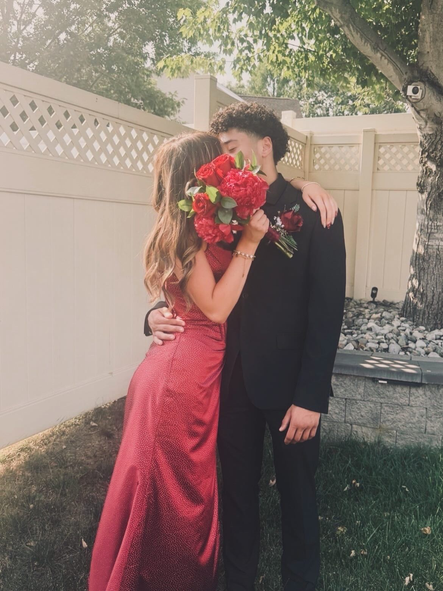
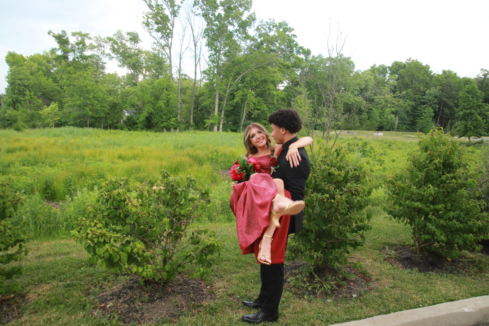
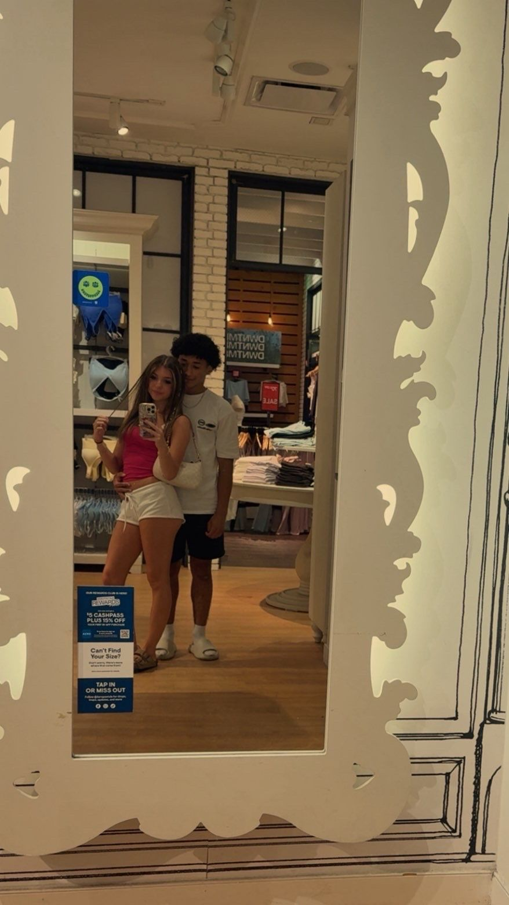
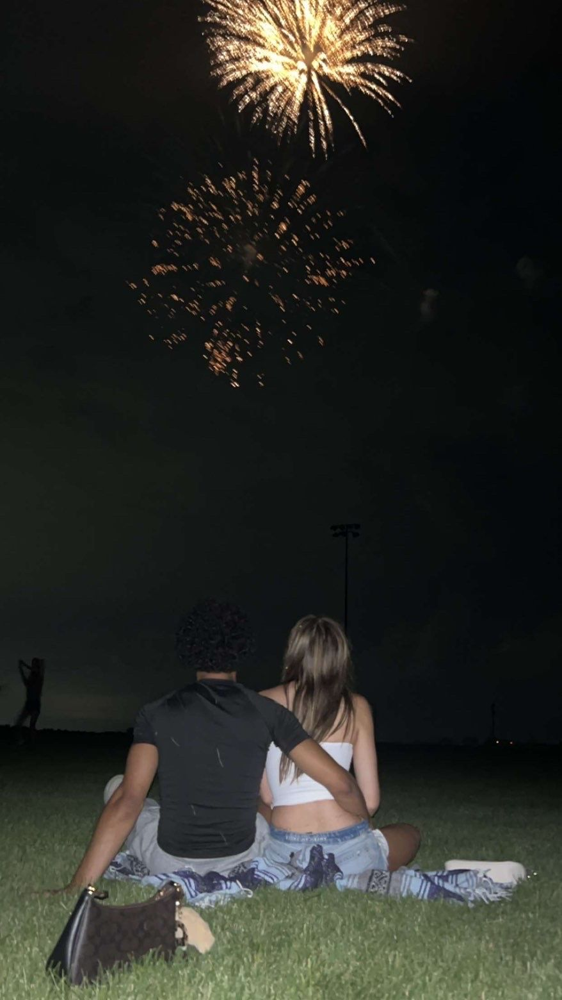
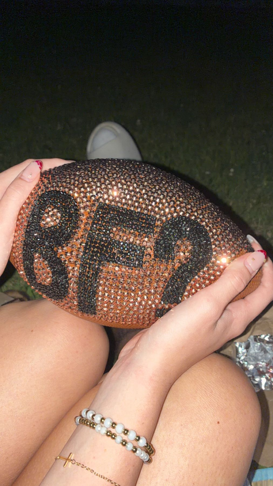

1
Kind
You are the sweetest and nicest person I've ever met, even to people who are complete assholes to you, you still always remain the bigger person and it is genuinely so incredibly admirable baby.
For Hailey
Happy 3 months, Hailey ❤
Okay this is kind of like the book you gave me. It's not a card, not a text at midnight, an actual scrapbook kind of thing. I hope you like it Hailey!
a little proof, in case you needed it

You are the sweetest and nicest person I've ever met, even to people who are complete assholes to you, you still always remain the bigger person and it is genuinely so incredibly admirable baby.
I've never met somebody who cares so deeply about people before, when you see somebody who is struggling or going through something difficult or maybe just an old lady walking across the road your first instinct is to help and I love that about you.

I'm going to be honest my girlfriend is a baddie and she carries herself like it and it's sweet to watch you be so comfortable in your own skin and whenever you don't I'm always here Hailey and I will never NEVER NEVER not want to reassure you.

I don't know if this is the right word to describe what I'm going to explain but whatever. I've never felt so comfortable and at home with anybody like I am with you Hailey, I truly feel like when I'm with you all of my problems go away and if they don't then I have somebody to be there with me rather than being alone and that means so much babe it really does.
Now somebody is going to think I'm lying here but I'm not. You are probably the most emotionally intelligent person I know and it truly shows in the way you handle yourself and your friendships and our relationship and I'm incredibly lucky to have somebody so smart when the person that she's with isn't exactly the brightest bulb in the box.
I love you baby and I hope this showed that.
What I love most about you
What I love most about my amazing girlfriend are your eyes. Now I can go on and on about that and I will in a moment but right now I wanna talk about something about you like really you that I love.

I love your smile and I'm not trying to be generic or boring, I'm being so genuine my love. Your smile lights up my entire day. It is the most amazing and beautiful and special thing in this entire world, seeing my person happy really does make me so happy Hailey. It is the most heartwarming and sweet thing I have ever had the privilege of seeing. It's like there are fireworks going off in your head and it just makes me feel like a little kid seeing his favorite football player like I'm in genuine awe every time I see it Hailey.
And don't even get me started on your eyes babe. They are the most gorgeous, beautiful, spectacular, little balls of joy I've ever witnessed. Anytime I look into your eyes all I can imagine is our future together and it really makes me so excited because I can't wait until we get to that chapter of our life and I can't believe you're the amazing person I get to do it together with.
Hopefully this didn't sound cliche because I truly meant everything I said my love.
Ahem... Ahem..... (We're going to imagine I'm talking to our kids). Jeremy and Tabatha, it's a joke, don't kill me, you guys have probably been wanting to know how me and your amazing, spectacular mother met, but I got you guys, don't worry about it.
So when I was 18 I went on a cruise with my family and on that cruise is where I met the most amazing person. Now I don't mean to brag but she came up to me just saying, but we met by this burger spot on the cruise and started texting a little from there.
We didn't hang out until the last day though because I was scared she didn't like me and she thought I didn't like her. But when we first hung out I instantly fell in love, she was perfect. Everything, down to the last tiny detail. I don't think Michelangelo could've made something more beautiful and with such an amazing heart to match it.
Cruises only last so long and we left the cruise the next morning but I promised her I would see her again. She was in Illinois and me in New Jersey but I was determined to make it work. There was no chance I was letting my soulmate leave my life just because she lived far.
So after only talking online for 2 and a half months she took the trip to New Jersey for my prom where we were reunited for one weekend.... and that was it.


Now after all this, you might be wondering, were you guys like boyfriend girlfriend yet? Nope. It was a big commitment with the long distance (for one person) so we waited some more.
Until the next time we saw each other, which was about 3 weeks later.

And when we were together on July 4th under the fireworks you're never going to guess what happened. Your mother asked ME to be HER boyfriend. I was the jolliest guy in the entire world.

And yes that's what that football is that's in the case on my desk.

And I mean yeah, that's about it for now. We haven't gotten married yet or moved in together or had you guys yet, but I'm going to make sure all that happens. Don't worry.
I think I can keep this one shorter and sweeter. Just imagine with me.
We live together in a big-ish house with a pool and a hot tub not too far from the shore in Tennessee, with 2 or 3 kids (you can decide).
I'm a lawyer at a decent law firm and you have your own esthetician place. We have 2 like tiny highland cows and a dog or 2 depending on what the queen wants, and every single day for the rest of my life I get to wake up and look at those spectacular, hazel eyes.
I truly am the luckiest man alive to have us be by each other's sides through everything. I love you.
Happy 3 Months, Hailey ❤
— yours, always